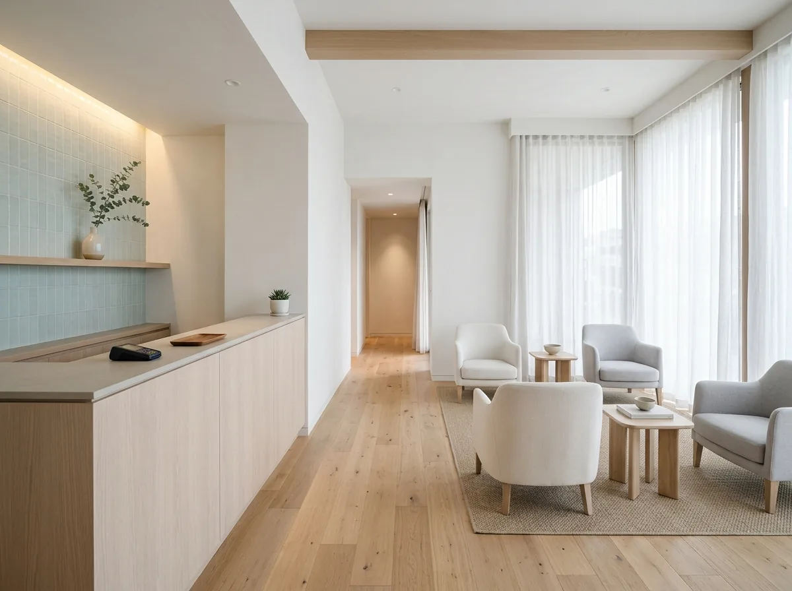
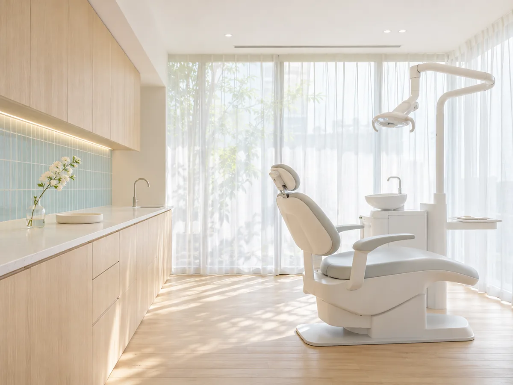

PREVENTIVE & AESTHETIC DENTISTRY
表面麻酔と極細針による無痛配慮治療と、削りすぎない予防歯科を大切にしています。全室完全個室の落ち着いた空間で、費用や期間もわかりやすくご説明します。
24時間 WEB予約・無料相談へOUR FOUR PROMISES
01 / PAIN-FREE CARE
麻酔のチクッとする痛みを抑えるため、歯ぐきにジェル状の表面麻酔を塗布したうえで、人肌に温めた麻酔液を一定の優しい圧力で注入します。
02 / MINIMAL INTERVENTION
肉眼の最大20倍の拡大視野で虫歯の部分だけを精密に取り除き、ご自身の健康な歯質をできる限り長く残します。
03 / CLEAR EXPLANATION
「何をされているか分からない」不安をなくすため、口腔内写真とアニメーションを用いて選択肢・期間・費用を丁寧にご説明します。
04 / PREVENTIVE HYGIENIST
同じ衛生士がお口の変化を継続的に見守ることで、虫歯や歯周病の小さな兆候を早期に発見し、一生ご自身の歯で噛める毎日を支えます。
PRICE LIST & FAQ
虫歯・歯周病・定期検診は保険診療を中心に承っております。審美・精密治療をご希望の場合の税込目安は以下の通りです。
| 治療メニュー | 特徴・素材 | 料金目安（税込） | 保証期間 |
|---|---|---|---|
| オフィスホワイトニング | 低刺激薬剤・院内照射（60分） | ¥22,000 | — |
| ホームホワイトニング | 専用マウスピース＋ジェル4本 | ¥27,500 | — |
| セラミックインレー（詰め物） | 金属不使用・自然な白さと高密着 | ¥55,000〜 | 5年保証 |
| ジルコニアセラミッククラウン | 前歯〜奥歯対応・変色しにくい高強度 | ¥110,000〜 | 5年保証 |
| マウスピース矯正（部分〜全体） | 目立ちにくい透明装置・3Dシミュレーション付 | ¥385,000〜 | 保定管理込 |
はい、当院の患者様の半数以上が予防メインテナンス目的で3〜4ヶ月に一度通われています。お痛みがない段階でのご来院を歓迎しております。
決してありません。保険診療でできること・自費診療の利点を中立にお伝えし、ご希望いただいた場合のみ事前見積書を作成します。
保険診療・自費診療ともに各種クレジットカード・電子マネーに対応しています。審美・矯正治療では分割払い（デンタルローン）もご利用いただけます。
院内は全面バリアフリー設計で、ベビーカーのまま完全個室の診療室へお入りいただけます。お子様とご一緒の受診も安心してお越しください。

PRIVATE ROOM & HOURS
周りの視線を気にせず相談できる完全個室制。土曜も17時まで診療しています。
| 診療時間 | 月 | 火 | 水 | 木 | 金 | 土 | 日祝 |
|---|---|---|---|---|---|---|---|
| 09:30 – 13:00 | ● | ● | ● | 休 | ● | ● | 休 |
| 14:30 – 19:00 | ● | ● | ● | 休 | ● | ▲ | 休 |
※▲土曜午後は14:00〜17:00まで診療／西宮北口駅 徒歩3分・提携駐車場あり
お電話（0798-555-0124）またはWEB予約フォームより空き状況をご確認いただけます。